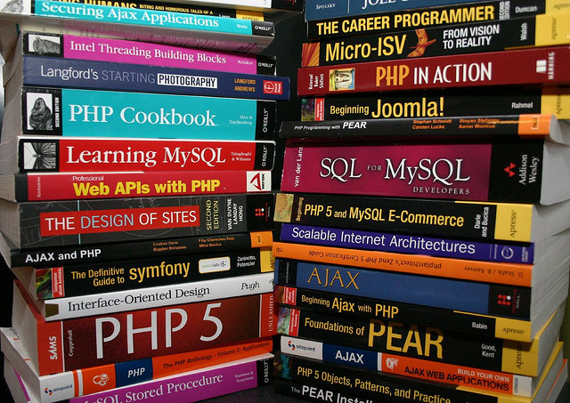
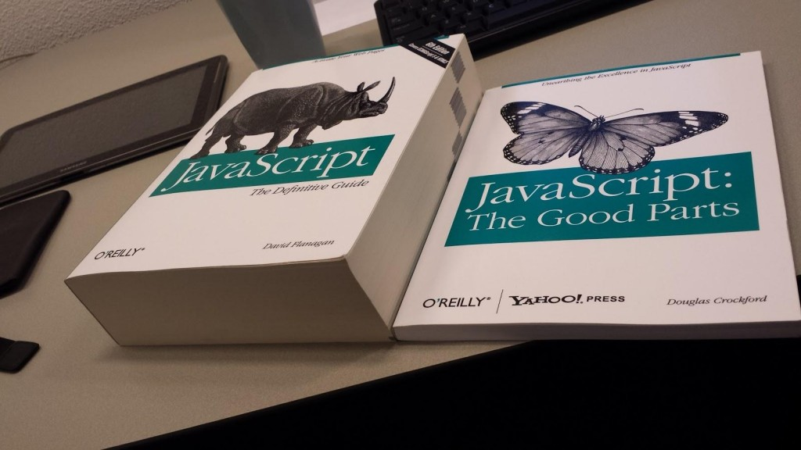

Goto: http://jacobburenstam.com/simplest-api
include LTH
author = Presenter.new(:jacob)
slides = SimplestAPI::Slides.new
wait until author.ready?
author.present(slides) do |slide|
print slide
any_questions? if slide.last?
end

Goto: http://jacobburenstam.com/simplest-api
include LTH
author = Presenter.new(:jacob)
slides = SimplestAPI::Slides.new
wait until author.ready?
author.present(slides) do |slide|
print slide
any_questions? if slide.last?
end
I'm a JavaScript?
JSON
Browser request/response model
Have you built a website?
Full stack developer



I'm a JavaScript?
JSON
Browser request/response model
Have you built a website?
"JavaScript was originally developed
in 10 days
May 1995 by Brendan Eich.."


asynchronous JavaScript and XML
BWT, every good Computer science idea in the last decade, has been invented at Google.
JavaScript Object Notation, took over XML
{
"handle": "buren",
"age": 26,
"languages": ["Ruby", "JavaScript", "Elixir", "Clojure", "Java"],
"address": {
"street": "Östervärnsgatan",
"city": "Malmö",
"country": "Sweden"
}
}
Key-value pairs
Supports nested keys.
var jsonString = '{"handle": "buren", "favoriteLang": "Ruby", "services": {"github": true}}'
var user = JSON.parse(jsonString);
user.handle // "buren"
user.favoriteLang // "Ruby"
user.services.github // true
"jQuery is the most popular JavaScript library in use today, with installation on 65% of the top 10 million highest-trafficked sites"
Remember the code from the first slide?
include LTH
author = Presenter.new(:jacob)
slides = SimplestAPI::Slides.new
wait until author.ready?
author.present(slides) do |slide|
print slide
any_questions? if slide.last?
end
DEADLINE = Time.new(2015, 10, 14, 18, 0, 0).freeze
module LTH;end
module LTH::SimplestAPI;end
String.class_eval { define_method(:last?) { false } }
NilClass.class_eval { define_method(:last?) { true } }
define_method(:wait) { puts 'Still not ready..';sleep 3 }
define_method(:any_questions?) { puts 'Any questions?' }
define_method(:feedback) { puts 'Feedback?' }
class LTH::Presenter < Struct.new(:name)
define_method(:ready?) { Time.now >= DEADLINE }
def present(slides); slides.to_a.each { |slide| yield(slide) };end
end
class LTH::SimplestAPI::Slides
define_method(:initialize) { @slides = File.read('slides.md').split('---') }
define_method(:to_a) { @slides + [nil] }
end
This actually makes the previous code work 

$.getJSON('https://api.github.com/emojis', function(emojis, textStatus) {
var makeImg = function(src) { return '<img src="' + src + '" />'; };
for (var name in emojis) {
$('body').prepend(makeImg(emojis[name]));
}
});
 Will perform ~900 requests
Will perform ~900 requests
Be careful when you make automated requests.
I got banned from Google for ~6 hours, after making 15k requests in a few miniutes.